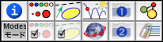
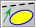
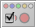
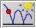
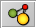
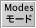
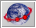
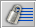

インスペクタ
インスペクタは、すべての幾何学的要素の属性を設定するコントロールセンターのようなものです。これは、 Cinderella.2 での根本的な改訂部分の一つで、以前の版の「要素の設定」に完全に作り直したものです。
インスペクタの機能を理解すれば、シンデレラでの作図を独自なものにすることができます。この節では、インスペクタの機能について概要を述べます。幾何学要素や物理的要素の個々の機能や属性については、それぞれの要素の説明の中にあります。
全体的な概要
インスペクタのメニューは 編集/インスペクタ から開きます。選択されている要素に応じて、ツールバーと、その下に選択された要素についての情報ウィンドウが開きます。ツールバーによって、インスペクタの情報ブロックを切り替えることができます。
 |
| インスペクタのツールバー |
それぞれのボタンは、インスペクタによって管理できる属性の種類を表します。ボタンをクリックすると、対応する情報ブロックを表示します。
大ざっぱに言うと、上段のボタンは個々の要素に関する情報を示し、下段はシンデレラの初期設定を示します。インスペクタは現在選択されているすべての要素を参照します。それぞれの要素の属性はインスペクタによって表示され、また変更することができます。表示される属性は、選択されているインスペクタのブロックによります。以下では、インスペクタでできることを、それぞれのブロック別に簡単に述べます。
-
 要素の情報: 定義、ラベル、パラメータなど
要素の情報: 定義、ラベル、パラメータなど
-
 基本的な外観: 色、大きさ、表示の有無、ラベルの表示など
基本的な外観: 色、大きさ、表示の有無、ラベルの表示など
-

高度な外観: 足跡や矢印の形 -

基本設定: 色、大きさ、表示の有無、ラベルの有無などの全体的な初期設定 -

物理: CindyLab の要素の物理的パラメータ -
 表示１ : 網目や背景画像などの表示属性
表示１ : 網目や背景画像などの表示属性
- 表示２ :計測の精度などの設定
-

初期設定: 全体的な色の設定といくつかの初期パラメータ設定 -

メニュー/言語: メニューの表示と言語の設定 -

環境: 精度、摩擦、動作設定などの物理的環境 -

ライセンス : ライセンス情報
インスペクタについての詳しい説明は次のそれぞれの節にあります。
- 情報ブロック
- 外観のインスペクタ
- 足跡と矢印
- CindyLab （物理実験室）
- 表示画面のコントロール
}
Page last modified on Tuesday 28 of February, 2012 [08:00:13 UTC].
The original document is available at
http://doc.cinderella.de/tiki-index.php?page=InspectorJ